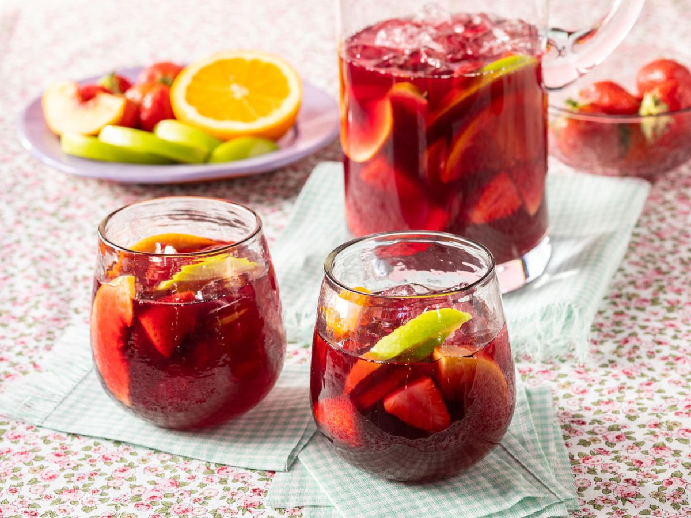
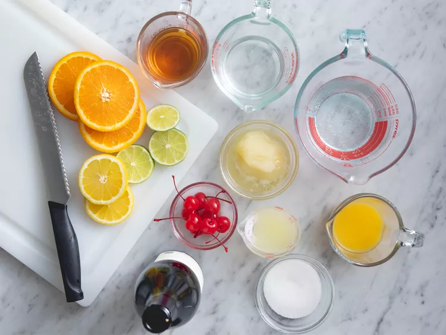
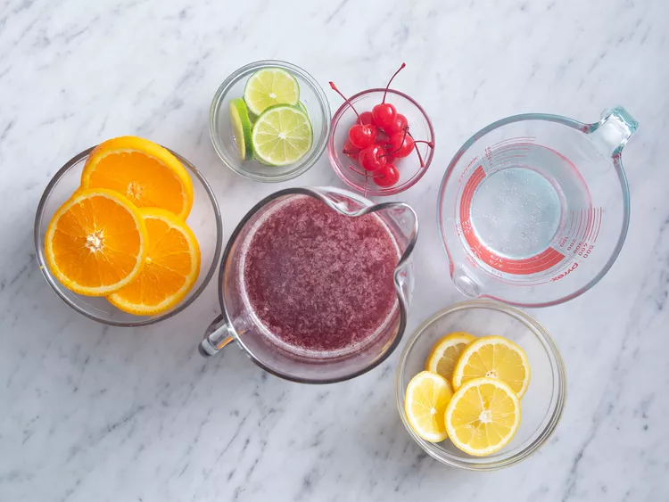
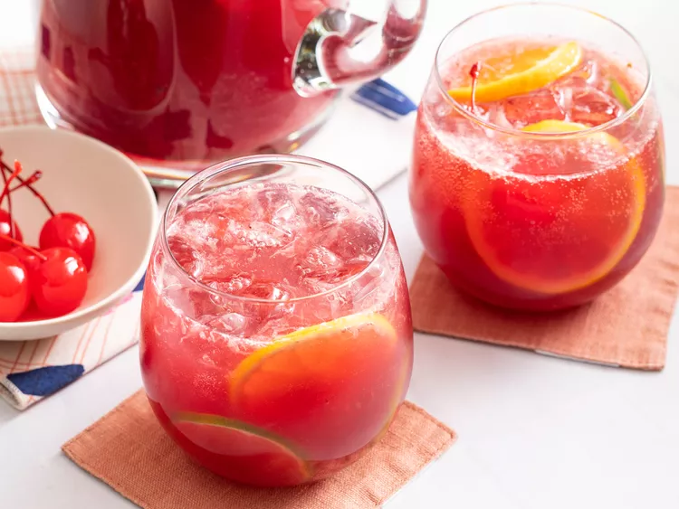

Sangria

When you need a crowd-pleasing cocktail, sangria is the obvious choice. A pitcher of sangria is the perfect summer drink to sip on at your backyard barbecue or party.
Ingredients
- 1 (750 milliliter) bottle dry red wine
- ½ cup brandy
- ½ cup triple sec
- ⅓ cup frozen lemonade concentrate
- ⅓ cup orange juice
- ¼ cup lemon juice
- ¼ cup white sugar (Optional)
- 1 medium orange, sliced into rounds
- 1 medium lemon, sliced into rounds
- 1 medium lime, sliced into rounds
- 8 maraschino cherries
- 2 cups carbonated water (Optional)
Steps
- Gather all ingredients.

- Mix together red wine, brandy, triple sec, lemonade concentrate, orange juice, lemon juice, and sugar in a bowl. Add orange, lemon, and lime slices and maraschino cherries.

- Serve immediately over ice, or refrigerate 8 hours to overnight for best flavor. For a fizzy sangria, add club soda just before serving.
